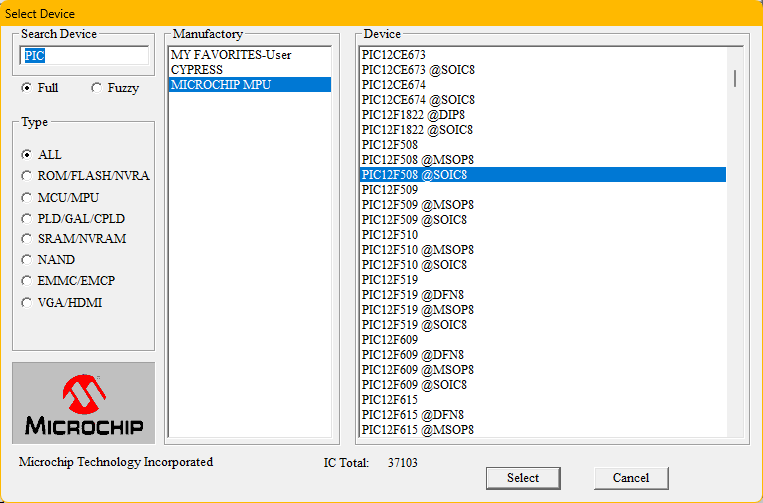
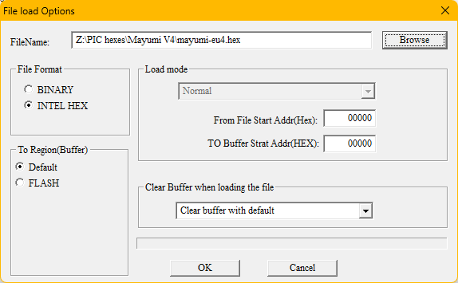
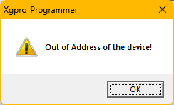
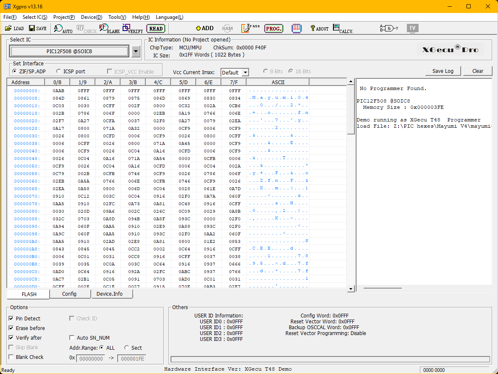
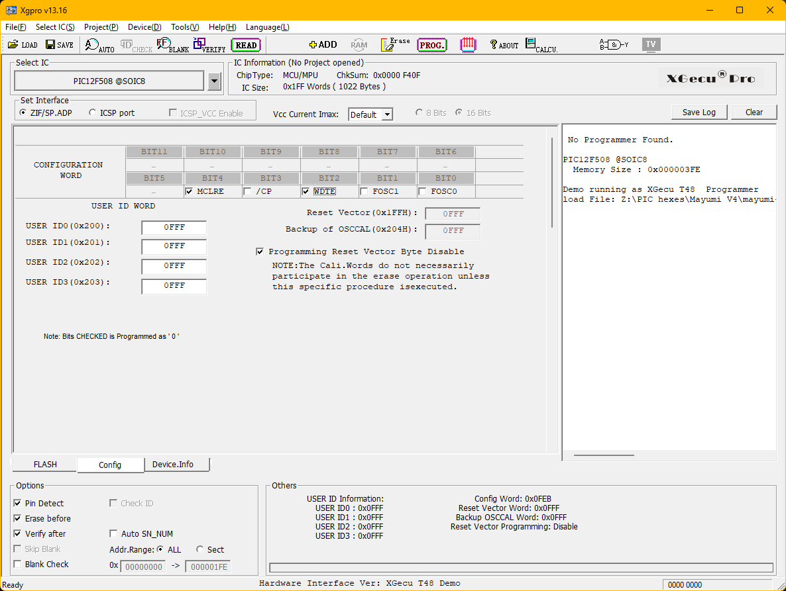
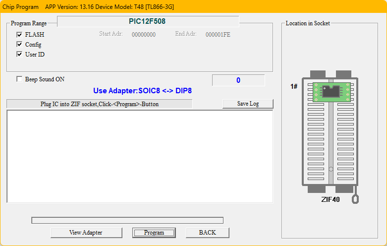
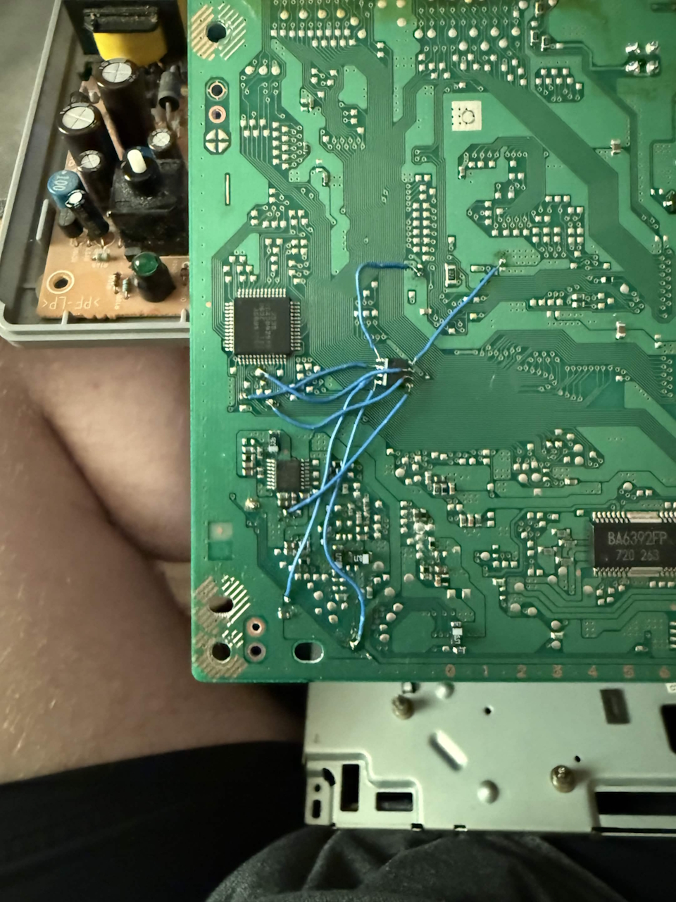

Making your own PS1 modchip
While you can get premade PS1 modchips for 10 bucks on ebay, I thought it would be cool to make your own, if you can afford the tools that is.
You will need:
- A computer
- A PS1 you want to modify (duh)
- A programmer (a PICkit can be used but I will focus on using the Xgecu T48)
- A way to connect your PIC to the programmer (I got the SOIC version of the PIC so I used the SOIC8 adapter)
- A compatible PIC
The hex files for PS1 modchips were originally written for the PIC12C508A.
These will work without any modifications on the more readily available PIC12F508, so that would be the PIC to get.
People have also used the PIC12F629 and PIC12F683, however the modchip code will not work on these without modifications.
Thankfully, people on the internet have mostly already done this work for you and archive.org in particular has multiple archives containing all the hex files for PS1 modchips.
Programming the chip
Connect your programmer to your PC, the PIC to the programmer and open the programming application.
Since I am using the T48, I will be using Xgpro.
Click on the big select IC button, search for "PIC" and select the PIC you are using.

Afterwards, you are going to load the hex file for the modchip code you want to use. In my case, that will be Mayumi v4 EUR for PIC12C508A.
Recommended modchip programs per revision:
- SCPH-1000/1001/1002: Stealth 2.8a
- SCPH-300x/350x/550x/555x/750x/900x/100/101: MultiMode3 (Use Mayumi v4 if MM3 doesn't work)
- SCPH-102: ONEchip (PAL PSone has extra BIOS protection just like the Japanese models)
- Any Japanese model: PsNee (Atmel based, ATMega required for BIOS patch)
The main difference between MultiMode3 and Mayumi v4 is that the former relies on the PIC's internal oscillator, while the latter makes use of the Mechacon's clock line for timing.

If you are using Xgpro, you will probably get a warning at this point saying "Out of address of the device!". This is normal. Click OK and it will load.

After you have loaded the hex file, this is more or less what the window should look like:

Very important: Before you flash the PIC, you need to adjust the configuration!
Go over to the CONFIG tab and check these bits to set them low:
MultiMode3, ONEchip & Stealth 2.8a: MCLRE, WDTE, FOSC0
Mayumi v4: MCLRE, WDTE

Afterwards, click on the big PROG. button and the programming window will pop up.
Here, just click Program and your PIC should receive the code. If not, double check your connections and try again.

Note: if you enabled /CP in the CONFIG tab, the verification step will fail, as you just enabled copy protection. This is normal.
Installing the modchip in your PS1
I will not be providing diagrams for this step as there are plenty out there already. I personally recommend William Quade's installation diagrams.
You can quite easily figure out your board revision by taking your console apart, then it's just a matter of finding the correct diagram.
Personally, I used an SCPH-5502, which has the board revision PU-18.
